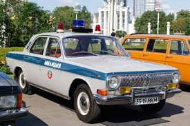

Первые работы по созданию модели ГАЗ-24 были начаты в 1961 году, за которые взялся главный конструктор Горьковского завода Александр Невзоров. Проектированием внешнего вида занимались молодые дизайнеры Киреев и Циколенко. Одновременно разрабатывалось несколько вариантов под разные двигатели (рядный 4-цилиндровый, V-образный 8-цилиндровый). Как и предыдущие модели ГАЗа, проект новой «Волги» ориентировался на североамериканский автопром, так как в 1950-е — 1970-е годы США прочно удерживали за собой статус ведущей автомобильной державы. Изначально «сверху» был спущен указ о том, чтобы просто «распрямить» одутловатый кузов ГАЗ-21 в угоду более модным строгим и лаконичным линиям середины — конца 1960-х годов. Ходовые прототипы для испытаний были построены в 1962—1963 годах, а эталонные образцы — в 1964—1966. В 1967 году автомобили были продемонстрированы руководству СССР в Кремле, где получили одобрение на массовое производство. Однако из-за начала арабо-израильских войн начало выпуска было отложено в угоду выпуску грузовиков и бронетранспортеров, для этого был переделан конвейер, на котором производились ГАЗ-21. Мелкосерийная сборка стартовала лишь в середине 1968 года (32 машины), массовое производство же приурочили к юбилею В. И. Ленина — 1970 год, когда было собрано 215 автомобилей по полностью серийной технологии, без остановки конвейера.
Имевший невысокую степень форсировки в заводской комплектации базовый двигатель «Волги» в гоночных вариантах доводился до более 150 л. с. с того же рабочего объёма в 2,5 литра[13], что в сочетании с облегчением автомобиля и доработкой шасси давало хорошие динамические характеристики. На «Волгах» участвовали в ралли, кольцевых гонках, автокроссе, также популярностью у профессиональных водителей пользовались массовые соревнования среди работников таксо- и автопарков по фигурному вождению и автомногоборью.
